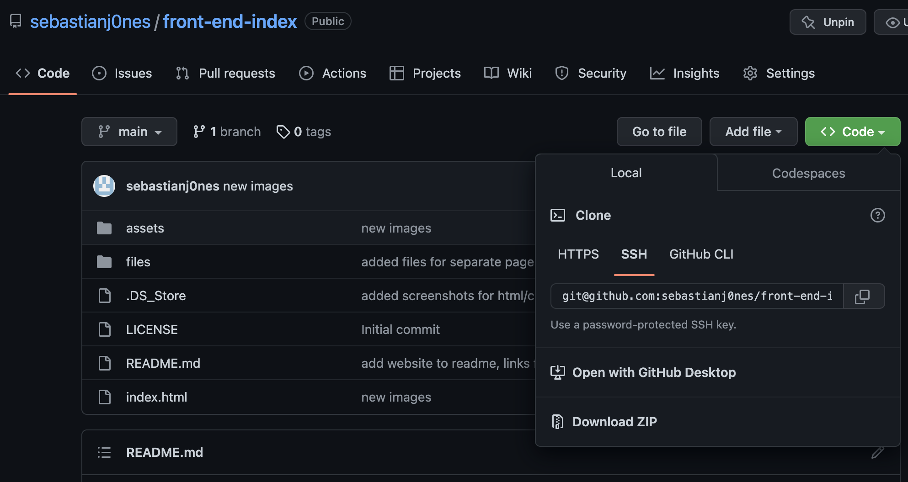
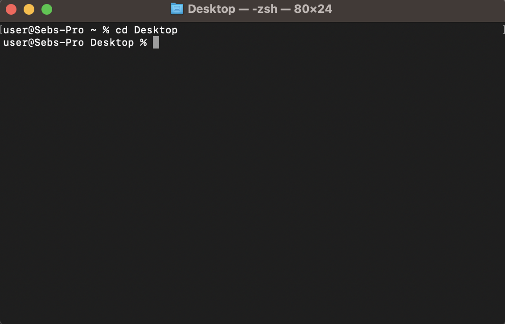
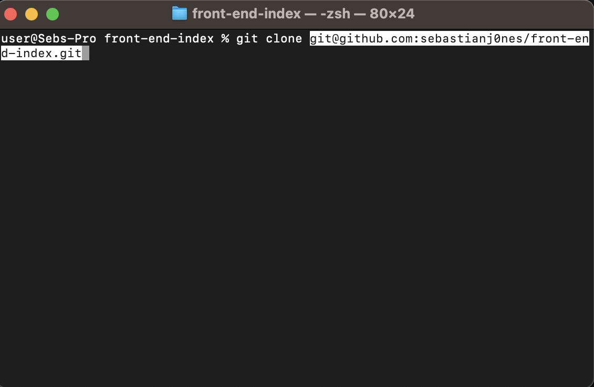
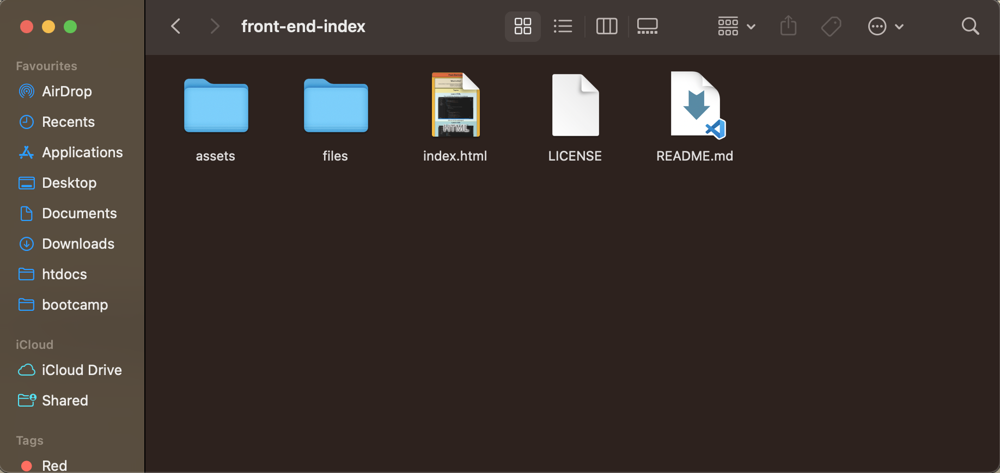

Git
Git
Git is the version control software, allowing savepoints to be made when developing code
Version control is helpful when developing code, especially in a team, to help prevent developers working on outdated code
Cloning Repository
Cloning a repository is the first step in being able to use version control when developing.
Head to the destined repository you would like to clone and start working on, and click on "code"

Click on SSH, then copy the unique ID given
Open Terminal
Then choose a destination for your repository, in this instance it will be cloned to the Desktop

Type in terminal "git clone '(paste the unique ID)' " and press Enter.

Once successfully cloned, you will find a folder containing all the contents from the repository.

You can now work on the project, ready to be pushed back to the repository